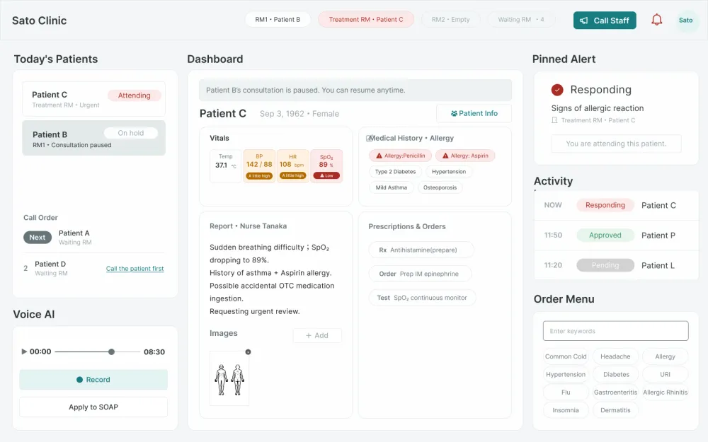
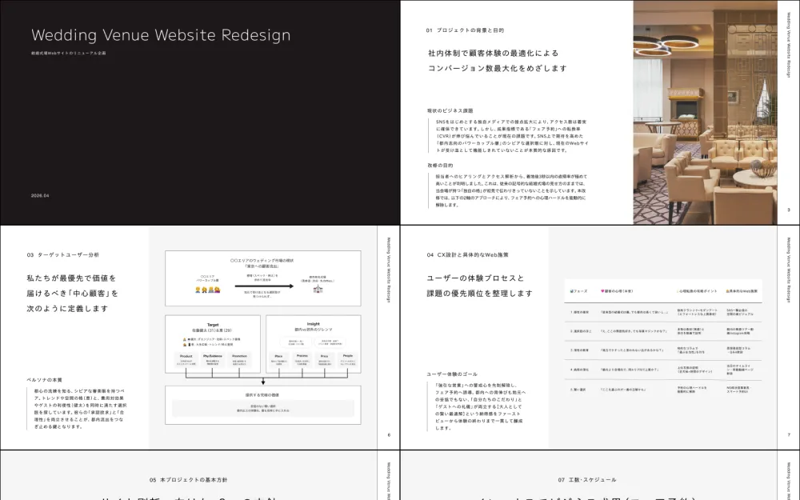
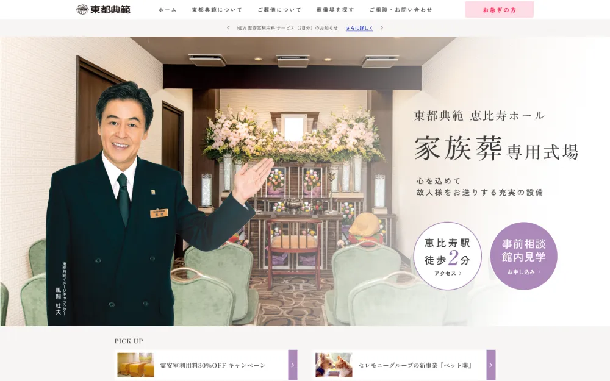
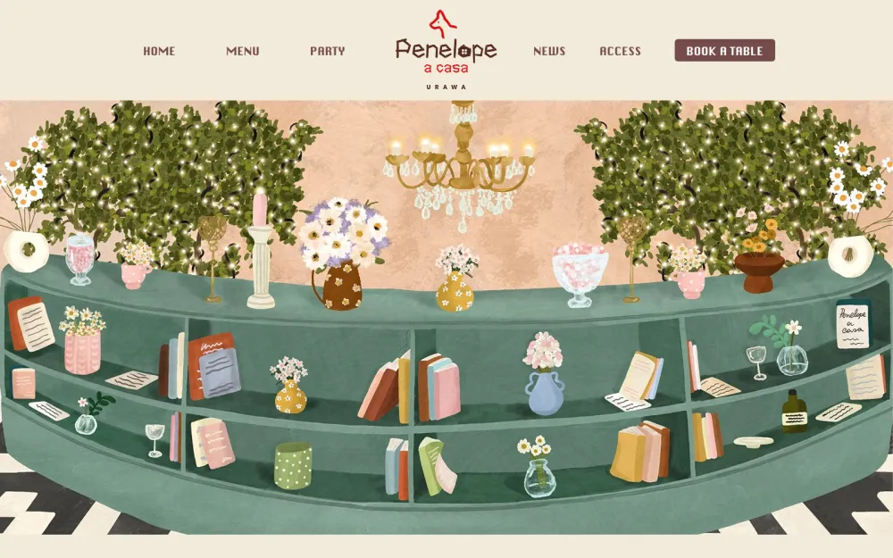

Works

assets/clinic-hero.webp を置くと表示されます医療UX設計 — 患者情報管理システム
伝達ミスと見落としを「静かな同期」で構造的に防ぐ、医師×看護師のためのUX設計。

assets/wedding-hero.webp を置くと表示されます結婚式場 Webサイトリニューアル
原因を「着地後3秒の直帰」と特定し、心理障壁を解除する情報設計へ再構築した提案。

assets/tohto-tenpan-hero.webp を置くと表示されます東都典範 Webサイトリニューアル
緊急度別に導線を分岐し、依頼までの不安を1つずつ解消する情報設計へ再構築。

assets/penelope-hero.webp を置くと表示されますPenelope a Casa URAWA Webサイト
パーティー空間とアットホームさの二面性をビジュアルで表現した、イタリア料理店のサイト。